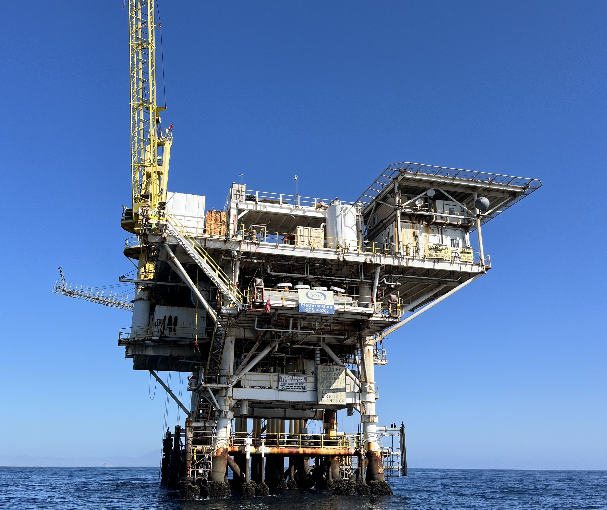

Research

I am a quantitative ecologist interested in the intersections among ecosystem dynamics, climate change, management, and adaptation strategies within communities. Throughout my work, I am committed to collaborative and transparent approaches to research–especially in the context of data science accessibility and literacy.
Extreme events and socio-ecological shocks
Extreme events are reshaping ecosystems and human communities at local to global scales, including heatwaves, hurricanes, and wildfires. In marine systems, heatwaves can alter species composition and community dynamics. On land, increasing frequency and intensity of wildfires along coasts and within watersheds—such as the 2025 Palisades Fire in Los Angeles County—threatens both terrestrial and adjacent marine habitats, including salt marshes, seagrass beds, and rocky reefs. In coastal regions, intense flooding events can exacerbate the gradual impacts of rising sea levels. Using long-term ecological datasets and global databases of socio-ecological shocks, I investigate how these events propagate across ecological and social systems, and how the timing and magnitude of disturbances influence ecosystem resilience. As a Young Scholar with the Beijer Institute of Economics I am working with an international team to grow a database on socio-ecological shocks, and develop innovative ways to model and understand how shocks interact with their context, and move between the local and global scales.
Coastal communities and environmental change
People living in coastal areas face unprecedented transformations of their homes, neighborhoods, and livelihoods due to changing resource distributions, sea-level rise, and increasing storm intensity. In New York City, rising sea levels threaten transportation infrastructure and the viability of neighborhoods, especially in South Brooklyn and Queens. In southern California, increasing intensity and regularity of winter storms is leading to rapid erosion of dunes and beaches. In response to changing resource distributions and availability, fishermen are having to make difficult decisions of whether or not to stay in the fishing industry, and if so, how to shake-up what they are catching or where they are fishing. I am currently working to assess how fishermen vary catch portfolios and fishing grounds to match resource availability, and how management structures can be improved to allow for flexibility.
The role of artificial structures in rocky reef community structure

The estimated footprint of human-made structures in the ocean is 32,000 km-squared and that number is expected to rapidly increase over the next decade as nations rely more on marine resources such as aquaculture and energy (Bugnot et al. 2021 Nature Sustainability). Many organisms in the ocean rely on structures for settlement, food, and shelter. Subsequently, a range of human-made structures from trashed lightpoles off the coast of Santa Monica, CA to oil and gas rigs in the Gulf of Mexico support communities of flora and fauna. When designed intentionally, these structures can support healthy and productive ecosystems that can boost biomass of important fisheries species, absorb carbon from the ocean, and protect shorelines from storms and coastal erosion. I am currently working to better understand the role that artificial structures made of diverse materials across environmental conditions play in the broader Southern California Bight ecosystem.
Range shifts in the Anthropocene
Three maps showing range shifts of American lobster, Humboldt squid, and Cushion star Organisms across the tree of life–from humpback whales to viruses, song birds to mycorrhizal fungi–are moving where they live. The ocean presents an especially exciting place to learn about how and why species move to new locations because it’s typically easier to move around in the ocean versus on land, and because ocean habitats facilitate narrow thermal tolerances. However, we are still just beginning to learn about how the identity of a species, population dynamics, location, and interactions shape the likelihood and extent of a shift in where a phytoplankton, fish, or whale is found, and where it will be found 5, 50, 100 years in the future.
I am interested in how species traits such as generation time, mobility, and reproductive strategy may play a role in shaping species range shifts. Additionally, I am interested in how these traits vary across a species range, and how this variability may play into range expansions and contractions in response to environmental change and fishing pressure. Currently, I am working to understand the impacts of range shifts on community structure of demersal fish around the world in partnership with the FISHGLOB consortium.
Range shifts can only occur when species can successfully move to new, more habitable spaces. In a new position at Occidental College in collaboration with the County of LA and the Resource Conservation District of the Santa Monica Mountains, I am working to improve natural area protection and planning by building habitat connectivity models. We will then use these models to identify bottlenecks where novel protected areas would enhance the movement of animals across a highly urbanized region. Enhancing regional connectivity can help facilitate species range shifts at the global scale, and at the local scale, make it easier for species to escape extreme events such as flooding and wildfire.
Are you interested in collaborating on any of these themes? Let’s chat!